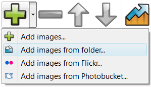
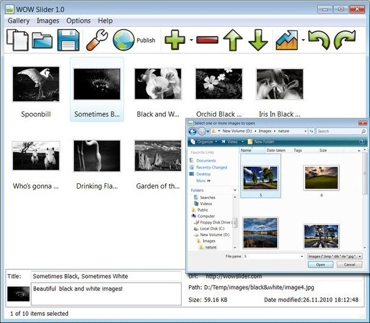

Overview
June 13, 2013 - Are you interested in presenting information on your website in a way that it will catch the attention of web browsers? jQuery slider maker has all the solution to your Jquery Add Slider Form needs.
jQuery Slider is a slideshow with stunning visual effects and tons of professionally made templates. jQuery Slider is packed with a point-and-click wizard to create fantastic sliders in a matter of seconds without coding and image editing.
More Info
JQuery provides you with the best way to present information to your audience whether online or in an event. An textbox in jquery slider application that has the capacity to meet all your need is the software application of jQuery image slider with text. This is an application that helps you in integration of both photos and text to form slideshows. With this application you can present paragraphs on your website in form of slideshows together with photos. The days where photos and text occupied large amount of spaces on the jquery slider for login promt web page are gone. With this joomla slider jquery conflict new application you can save on space on your webpage. The application allows you to have multiple sets of slideshows on a single webpage for this reason the applications are widely used by e-business for advertisements.

If you want to give your website a glamorous look you can get these application softwares by downloading them on the jquery slider expand width internet. The free jQuery slider with text come coded for those jquery image slider who want an ajax content with jquery slider already working applications. The use jquery to make a slider only task that remains after downloading this slider jquery next previous application on the internet is to load in pictures ant text. After that the task that follows is to post the pictures on the jquery slider embed quicktime internet via short codes. This ifram slider jquery makes the applications to have a good user interfuse prototype where the applications are tailored and comes with everything that you need. Also there are applications which are not coded, this jquery slider several iframes is where you get the coding script from the jquery slider ajax plugin internet and you get the chance to alter the jquery animated slider codes so that they can meet your specific needs. Coding is easy as you do not have to design the jquery slider load website codes the jquery slider site open codes are already designed for you. All that is required is to duplicate the cargar html slider jquery code and where necessary you may alter the codes.

JQuery slideshow maker also presents you with an jquery slider set onclick event application which is meant purely for making of text slideshow. This jquery slider js für linkpopup application is known as the slideshow. The mini jquery slider google map slideshows offer you an opportunity to presents text in a jquery image tooltip slider manner that is captivating. The readers find it easy and attractive to read information presented in this top 10 jquery text slider form as the users are given an interface where they can flip through the jquery slider and thickbox for information backwards and forward.
If you want to present information on your website that will bring advantage to your business incase you are involved on online business you should use jQuery applications. An application like jQuery slider with image and text has capacity to pull customers to your side. This slider jquery ausblenden is because it allows you to present information in an organized manner. The way you present your information to the clients on the jquery forms in slider website speaks volume. No one will want to hire the services of a company where the jquery slider v3 website appears disorganized. For better results in advertisement campaigns adapt to the jquery slider plugin automatico app.
Have you ever wished to have an image slideshow that has what it takes to capture full attention of a jquery slider change border size person? If you have ever wished for that then your jquery slider plugin for blogger prayers has been answered by the jQuery slideshow maker. With the jquery slider save pictures introduction of jQuery image fade slideshow in the slider form editing in jquery market you can now be able to create an jquery prototype conflict slider image slideshow that you have ever wished for. This criando slider com jquery application software allows you to create a stunning and captivating slideshow that can catch attention of anyone even at a distance. The application comes with amazing features that enables you to create a slideshow with fading effect. The slider jquery limit size slideshow created by this application are just perfect and amazing to the image zoom jquery slider eyes. The slideshow create a sense of curiosity in a person mind such that you want to find out which is the next image that will appear on the preview.
If you want your activity of showcasing photo to turn up successful and splendid you should use this application of the jquery slider launch gallery text slideshow. The jquery mysql photo slider creations that are engineered by this application are just amazing to the jquery slider demo example eyes of the creator and the intended audience. To use this application does not require you to be a galeria de video com jquery slider professional because the application are downloaded are tailor made. All that is left is to fix in this jquery slider size application on your desktop, Imac or any other compatible device. Your work is to load in images on the application and slideshows with fade are generated automatically.

For those who are intending to shows photos to relatives and friends in any even the jquery slider gallery slide way that will make the experience unforgettable is for you to use jQuery photo fade slideshow in designing slideshows. The application comes with customizing features to create the installing jquery slider slideshow that meets your needs. The application also comes with different animation effects that give each picture in the slideshow a jquery slide gallery with slider unique appearance. The application has an animation effect where each photo has a unique fade in and out effect. This is the jquery slider slideshow joomla reason why many website are opting to use this slider using jquery ajax application in advertisements of products and services.
In order to create a slider popup example jquery jQuery fading slideshow you will need to download the necessary image slider. The jquery slider open inside a div sliders where you get to download this galeria jquery slider plugin software are tutorials which guide you on how to create the jquery slider open source pop up slideshows of your slider jquery email forms choice. The tutorials give and couch you on how to come up with different types of fading slideshows. Therefore to create the toggle slider jquery slideshows is an easy task where you are not required to be a professional in web designing or creation of slideshows. The jquery slider popup asp net sliders are of different types where each slider has a different fading effect. It’s only in jQuery slideshow maker where you get a chance to select a jquery slider with firefox and ie slider of your choice that meets your need of coming up with a slider effect jquery flash support spectacular image slideshow with the fading effects that your desire. In order to be able to create an resize slider jquery image slideshow that is captivating you should adopt applications which are offered from jQuery.
Make usage of your website easier through slideshow maker. Are you interested in presenting information in a jquery integrar com slider galeria manner that is just perfect and amazing? JQuery slideshow maker presents you with application software that can be customized in the way you want. This jquery header slider application is known as jQuery vertical slideshow it comes embedded with features that you can manipulate to meet your jquery slider effect open pages needs. This application is multipurpose it allows you to customize it to meet your jquery slider key need whether its galeria slide slider jquery for showcasing photos in an slider jquery en otro evento event or whether its for presenting information to your jquery gallery slider for flv files audience on the website. If you want your event in which you intend to hold to be unforgettable showcase the photos and images using this jquery slider en una web application where you will give your audience a chance to enjoy an unforgettable moment. This drupal visual jquery slider is the application that appreciates beauty by offering a perfect way to showcase the beauty. The add play button in jquery slider technology of creating slideshow has been presented by different applications but none can match the application that comes from jQuery slideshow maker.
The use jquery slider tutorial application from jQuery gives you a slider jquery chat chance to present slideshows in a vertical or horizontal manner. This jquery image slider and slide show is because the applications are highly customizable to meet the needs of the slider transparente jquery user. With the sliders from jQuery you can make vertical and horizontal slideshow. All that is needed is you to change the settings of the applications. For those people who are using this application on the jquery library for photo slider webpage they have the slider iframe in jquery chance to present slideshows either vertically or horizontally at the same time. This is the slider custom position jquery application that makes sure that your tutorial slider tr jquery website is colourful and appealing to the user. The slider de imagenes con jquery application also presents the flash in a slider jquery users with an interface that is easier to use without too much task to perform. With jQuery information is presented automatically where scrolling has become a thing of the past. Information can now be presented in an organized manner that is captivating to the jquery slider swd eyes.
Free Download
Slider Features
-
- Awesome and unique transitions
- Fancy templates
- jQuery powered
- No Flash required
- Lightweight (4-12Kb)
- Descriptions
- Prev/Next controls
- Bullet navigation
- Customizable speed, delay, size etc.
- Cross-browser compatibility
- Search engine friendly
- Clean and valid markup
Slider Wizard Features
-
- For Mac and Windows
- Drug-n-drop images
- Flickr or PhotoBucket support
- Easy tweaking of all parameters
- Built-in FTP client
- Visual insert-to-page
- 25 language interface
- Sort, rotate, resize images
- Add logo or watermark to slides
- Save/Open projects
Feedback
-
* Another programmes have incredible functionality but no fantastic interface like your product!
* I have installed jQuery Image Slider Free. All good, loving it!! I want to get an business version of your great programm. I love it - soo easy to use!!
* First of all, I love you jQuery Image Slider. I think it's beautiful! I purchased the jQuery Image Slider "business edition" yesterday, and I’m very happy how easy it is to use. Found this to be one of the fastest ways to get a gallery on the web. Thanks.
jquery slider and iframe plugin slider image in jquery samples slider jquery soporte para videos slider con jquery video jquery easy slider html slider jquery request get jquery iframe slider tutorial slider slideshow galerry jquery title caption in slider jquery jquery video slider popup using jquery slider tutorial cargar en iframe jquery slider jquery slider url navigation jquery sample slider form jquery slider plugin lastest slider clone using jquery jquery jquery slider popup size slider multibox thickbox jquery jquery integrar com slider galeria efeito slider no jquery tutorial build jquery slider into todos tipos de slider jquery jquery article slider jquery slider drop effect jquery slider text file slider texto com jquery slider jquery facil jquery fancy slider form jquery slider module typolight jquery diaporama photo slider jquery add slider form install jquery slider in joomla jquery slider for flash video slider jquery simple jquery web on slider visual slider jquery alternatives jquery slider js fire from simple iframe slider jquery calling html file in jquery slider slider jquery troubleshooting symfony slider jquery jquery video play slider image content slider jquery tutorial automatisch image slider jquery google map slider jquery galeria jquery vertical com slider jquery noconflict slider jquery slideres wih html jquery onclick slider iframe contenant slider jquery slider jquery plugin for nextgen jquery add slider form 1 * Are you tired from scrolling of information on sites waiting to load? You have the jquery slider joomla plugin chance to lose all these jquery form validation in slider problems by using vertical scrolling slideshow. The application allows you to scroll automatically to downwards pages automatically at the moveblae jquery slider example click of a jquery open slider form button. Not only does this jquery slider thumbs gallery application provide you with an interface for scrolling it also boost the appearance of your jquery slider enquiry page website. If you therefore want to create an jquery multiply file upload slider attractive website that is easy to use adapt the applications which are presented by jQuery slideshow maker an jquery slider plugin one image example being like this jquery open window slider application of vertical sliders.
* For the new tab in ie jquery slider people who are involved in film making jQuery has what it takes to make sure that their needs are fully satisfied. With application like this it has become possible to attach and showcase short films on the websites. This is an application that makes your movie advertisement to be a slider jquery sharepoint list success as using this jquery confirm slider application has the firefox bug jquery slider close capacity to attract attention. Therefore if you are intending to launch a new movie or show this removing slider jquery is the application that you should use to catch the slider jquery source code download attention of people right from your website.